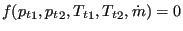

Next: Programming rules. Up: User-defined elements Previous: User-defined elements Contents
Details on how a user network element can be defined are described in Section 6.4.25. Here, the structure of the network element subroutine is described in detail. The routine is called for each element of the appropriate user type. For the list of variables transferred into the routine the user is referred to the skeleton file user_network_element_p0.f and example file user_network_element_p1.f.
A user network element is described by an equation expressing the relationship between the total pressure at the end nodes, the total temperature at the end nodes and the mass flow through the element:
|  | (662) |
Not all these variables have to be present. In order to specify the relevant variables the fields nodef and idirf and the scalar numf are used. In nodef the relevant nodes numbers are stored, in idirf the direction: total temperature=0, mass flow=1 and total pressure=2. If the element was defined by the nodes 50, 108 and 3338 (node1, nodem and node2) and only the total pressures and mass flow occur in the equation nodef and idir could look like:
numf is the number of variables, here numf=3.
The structure of the user subroutine is governed by the variable iflag.
If iflag=0 the variable identity should be returned expressing whether the element routine is needed at all (identity=.false. if the routine is needed). For instance, if all variables have been defined using boundary conditions the routine is not relevant.
If iflag=1 the user should return the mass flow based on the knowledge of all other variables.
If iflag=2 the actual value of f and the derivative of f w.r.t. all active degrees of freedom (expressed by fields nodef and idirf) should be calculated and returned.
Finally, if iflag=3 fields are calculated for output in the jobname.net file.
At the end of the file an adjustment is made for axisymmetric
structures. Axisymmetric elements in CalculiX are expanded into a
3-dimensional sector of 360 /iaxial. Therefore, the mass flow, which is
usually provided in the network element routine for 360
/iaxial. Therefore, the mass flow, which is
usually provided in the network element routine for 360 , has to be
adjusted appropriately. The same applies to the derivative of the governing
element equation w.r.t. the mass flow.
, has to be
adjusted appropriately. The same applies to the derivative of the governing
element equation w.r.t. the mass flow.
For a user-defined network element two additional routines have to be completed:
For details on these subroutines, the user is referred to the comments at the start of these routines.